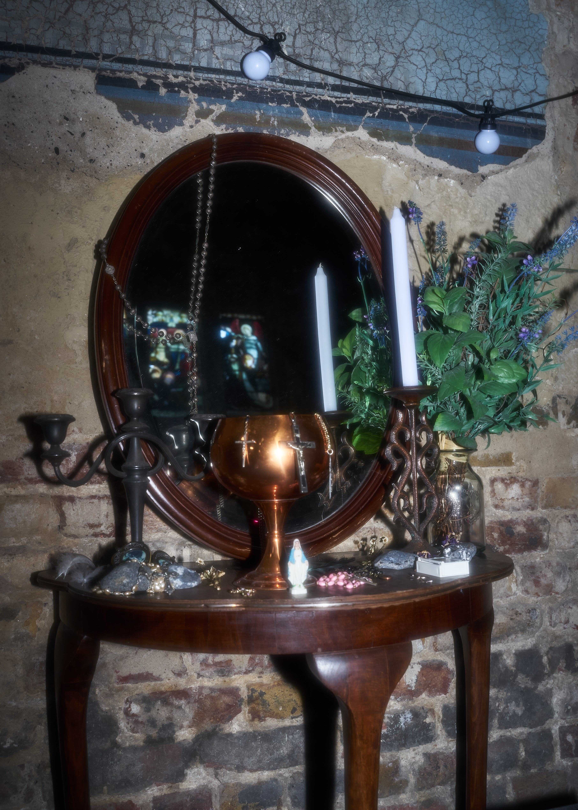
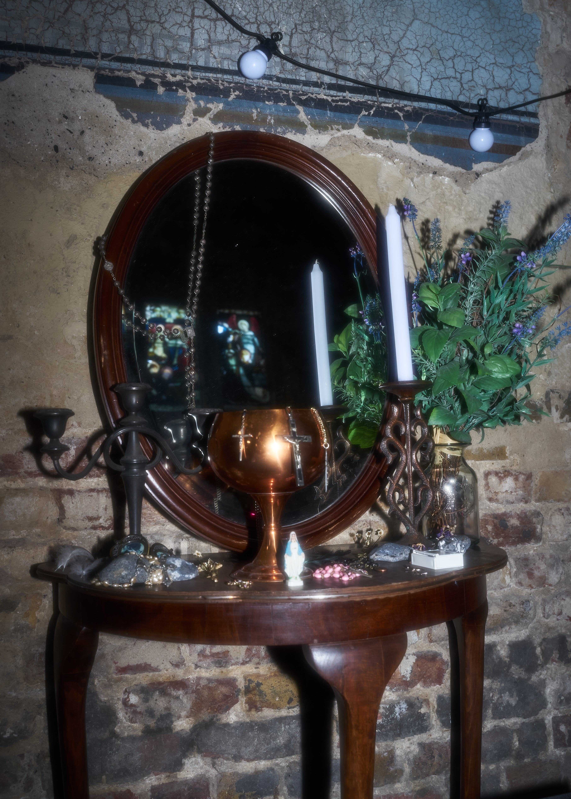

Asylum Chapel, London | 2 April
Inspired by many Asian children’s childhood - mostly Chinese and Japanese - that revolves around gaming and anime, 'A Place Where Spirits Collide' reinvestigates the past through installation and performance, attempting to build a bridge between the virtual and the physical. Originally a personal cultural memory, by inviting artists of different backgrounds, the exhibition transforms the subject artistically by showing the co-existence between humans and technologies - that the digital is no longer a disposable exterior of our physicality.
Being a site-specific and installation & performance-only exhibition, 'A Place Where Spirits Collide' sites itself in a historical chapel, experiments with unconventional space and the effect such space brings onto installation and performative pieces.
The exhibition is purposefully laid out in a circular order. The centrepiece is an audio-visual performance focusing on the theme of the digital; surrounding it are a number of installation pieces that narrate cultural and self-identity. The encapsulating layout in a historical site combined with our modern way of exhibition viewing re-emphasises the merging of two worlds, showing the birth of a new-age habitat, a space where physical and virtual spirits collide.

Andy Ralph
Pre ~ Vesica Piscis , 2023
Cast tin, glass, tar, sanded grout, wood
Patterns and order emerge out of chaos through energy and force,then self replicate to sustain.
Anastasiya Calinovici
It Whispers to Me, 2023
A4 print
Dien Berziga
Sprinkling, 2023
Oil on canvas with PLA-printed frames
Izna Bendey
Planted, 2023
Soil, pine cone, flower, gemstone
‘Planted’ is a symbolic piece that was inspired by sacred geometry, Islamic spirituality and mystical concepts, as well as my continual exploration of my identity by journeying through myself. It was instigated by my yearning to prostrate; in the Islamic form of prayer.
JiaYi Li
Infection Series: Suppuration, Source of Infection, King, 2022-23
Acrylic, metal
Julie Maurin
Now my teeth r touching the floor / Between the dirt and it’s gore / What was it for?, 2023
Polyurethane foam, latex, epoxy resin, found objects, fake hair, resin teeth, animal teeth, pearls, dirt, flowers
For life, For ever
No harm, no whisper
Well, I want your name engraved in capital letters
Buried, between brothers and sisters
Sayonara, take back your stuff and forget
***
About me, late on our first date
Eyes like dark chocolate
How long does it take
Before I’ll find someone that doesn’t break
The ice block that will never melt
***
That’s my heart if you didn’t get
The metaphor and I regret,
All the ex’s I didn’t rate,
No, we can’t be mate
And you don’t even deserve the hate
KaiYan Cheung
Floral Study, 2022 - Ongoing
99.9 silver
Altar flowers are used for different religious ceremonies in symbolising various meanings such as resurrection, memorial and birth. In keeping up with the “Principles of Integrity”, worshipers often express qualities of “truth and purity” with the use of living flowers; artificial flowers, which are seen to be “falseness and pretence”, are often avoided.
The metallic flowers are not replicas of real
living flowers and are deprived of nature’s genetic coding. Symbolising a different kind of “purity” one that is not necessarily bound to biological origins or physical reality but rather to the imaginative realm of the artist.
Can the floral shapes be seen as a way of opening up new avenues for spiritual or aesthetic experiences? Can nonreligious art installations in a sacred space facilitate these connections? Or does it represent a kind of aesthetic decadence?
Katya Sykes
May We Sip..., 2023
Reishi mycelium, medicinal Turkey Tail broth, bracket and polypore mushroom paper, mixed organic matter, found object, salt dough
Kyriacos Georghiou
Arrogant and Rebellious, My Creature Walks, 2023
Animal bones, sheep leather skin, clay, wire, nails, epoxy resin, spray paint, plaster
Maximilian Prag
t/æthered to the core, 2023
Resin, metal, silicone, microcontroller, LEDs
Shapes of both two and three dimensions combine to create bonds. The pieces are created with a multitude of analogue and digital tools, that rely on the aspect of human intuition, which as far as the tools allow highlight its faults, but also the mental quality of letting go and being guided, therefore treating the sculptures as irritated material.
Bridging the physical body, who through movement shapes material in the virtual and translating to the physical yet again by 3D printing the virtually sculpted shapes. Linked together the sculptures act as dreamcatchers radiating energy, connecting and transcending realms.
 

Michaela
Močiutė (8 mins 30 sec), 2022 - 2023
Found objects: wooden table, mirror, crosses, Virgin Mary statue, box, feathers, dried flowers and leaves, rocks, pewter, candelabra, candles, mulch, moss
An exploration of memory, time, and place. The film features highly personal mixed media footage from a trip to Lithuania where Michaela’s roots lie and is essentially a pilgrimage of reminiscence.
Inspired by Jonas Mekas and Chantal Akerman, Močiutė investigates absence within spaces of memory, as well as connection. The film uses a voiceover from Michaela’s mother recalling stories and reading her poetic reflections on the themes of loss and memory.
The installation is comprised of religious ephemera including crosses, statues, religious imagery in frames and a variety of rosaries, all from her mum’s collection. The multiple crosses on the vanity symbolise the unique abundance of crosses found in Lithuania. They are found in the fields, by homesteads, near roads and at crossroads as protection for travellers , in cemeteries and as adornment of sacred sites.
Natasha V. Moody
Spirit Jars (Ghosts of the Great North Wood), 2023
Plants, incantations, archival solution, metal, glass
Ghosts of the Great North Wood is a project of conjuring echoes of an ancient woodland that once covered the ridges running between Deptford and Croydon. Spirit Jars, on show at Asylum Chapel for A Place Where Spirits Collide, is a collection of plants that indicate the presence of woodlands past or present.
The ivy branch, holly leaf, snowdrop, and violets were gathered along SE London streets and preserved in an alcoholic menstruum inspired by a Victorian botanical archiving practice. They are also infused with incantations, both written and spoken, that invoke a layering of history and knowledge connecting SE London’s urban sprawl with its roots of ancient wood.

Malu Laet (aka Sally)
Rites of Integration: Stream Gust, 2023
Performance: ~15min
in between ~ º ¤ ø , ¸ , ø ¤º ¤ ø , ¸ ¸ , ø ¤ º °°` ~ º ¤ ø , ¸
magnetic fields,…….o O o O o O o O o ~ o O o ~ o O o
oO ~ Oo O ~ ~spectrums of electricity,…~ . “ . _ . .~ “ ~ .~ “. . ~ “". .” .~ . ~ “".
~“ . _ . .~ “ ~&bodies of water,…………lies a fountain of virtual fluids; a moist portal into an information stream
containing fluids
both cybernetic and visceral;
Sally tunes in to the stream with her magic tools and from the ritual~ º ¤ ø , ¸ a gust of virtuality is pumped, a mesmeric lure into a wet tech wizardry~ º ¤ ø , ¸ ,
ø o ~ o O o ~ ~ . “. _……